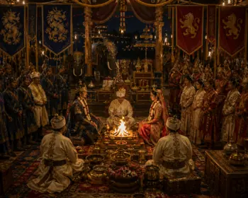
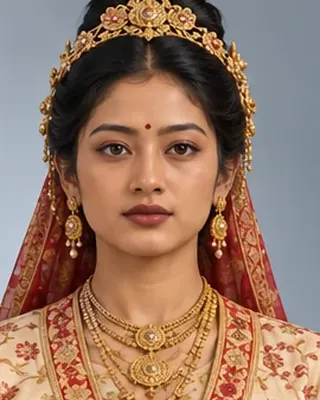

c. 1308
ৰজনী
early 14th century · Kamata princess, queen of Sukhaangphaa

Daughter of the Kamata king (Kamateswar), given with her sister Bhajani to Sukhaangphaa to seal a truce. Mother of Sukhrangphaa, Sutuphaa, Tyao Khamti and Tyao Chulai.
Record confidence: medium.